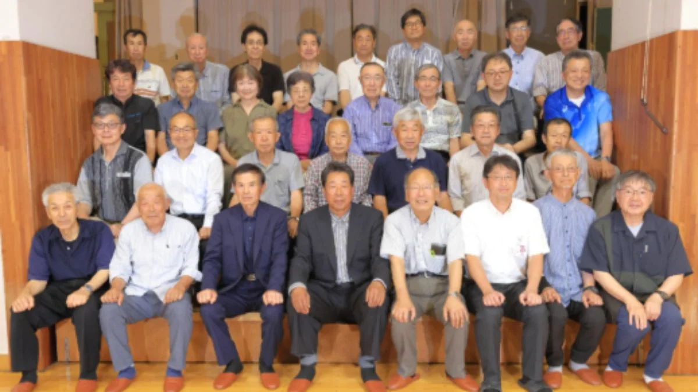
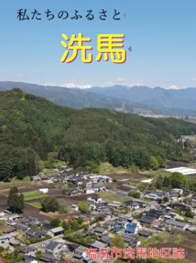

昨年度の調査・資料収集をもとに、地区誌の骨格となる全体構成表（アウトライン）が出来上がりました。6月23日には編纂会新体制の面々をお招きし、編集委員会の全体会（方針大会）を開催。今年度は各部会が本格的な執筆にとりかかります。
ニュース
2025年8月4日
今年度から執筆がスタートしています
〜編集委員会ニュース第3号〜

昨年（令和6年）は6つの部会で調査・資料収集に取り組み、全体構成表（アウトライン）が完成しました。6月23日の全体会（方針大会）を経て、今年度からいよいよ執筆がスタート。刊行は令和11年3月を予定しています。
今年度から執筆がスタートしています
| 会長 | 石井達郎氏 |
|---|---|
| 事務局長 | 南山貴史氏（洗馬支所長） |
| 顧問 | 清水英成氏（前編纂会会長） |
全体構成表（アウトライン）が完成しました
6つの部会の調査・資料収集をもとに、地区誌の骨格となるアウトラインが出来上がりました。表紙候補は、妙義山と北アルプスを背景にした洗馬の集落の写真が有力です。

表紙候補 妙義山と北アルプスを背景とした洗馬の集落
- 洗馬のすがた
- 洗馬のあけぼの（縄文〜中世）
- 高遠藩飛び地洗馬郷（江戸時代）
- 洗馬文化
- 明治維新から今
- くらしといのり
- ふるさとづくり
編集委員会ニュース 第3号（全文）